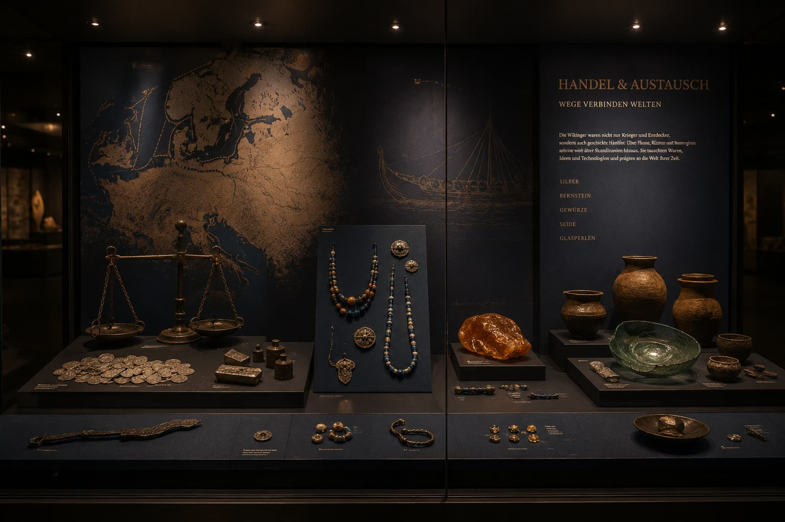
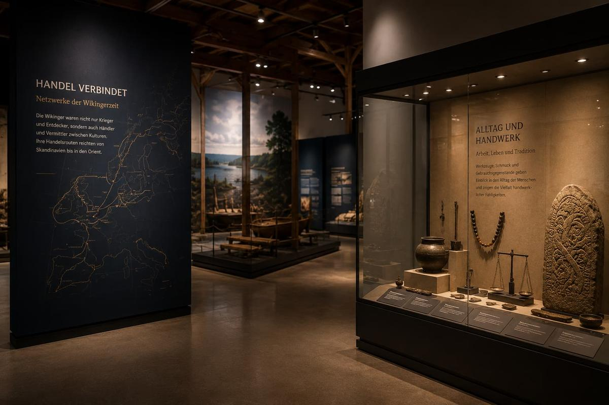
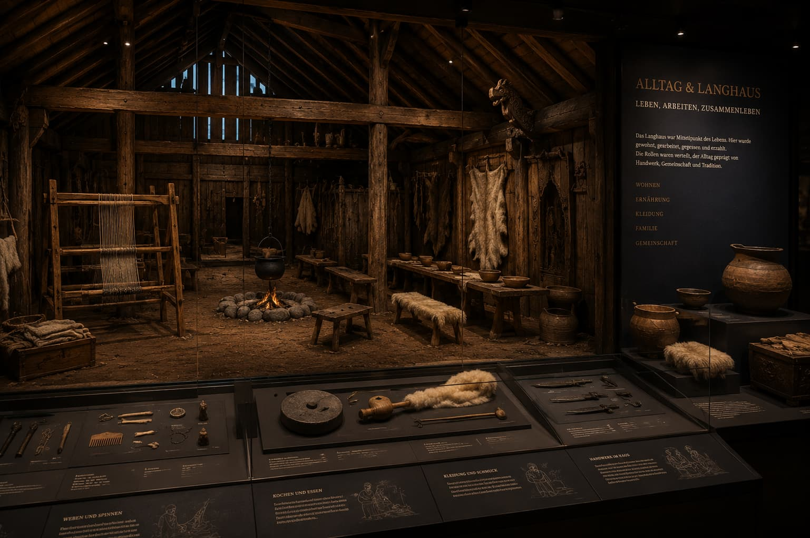
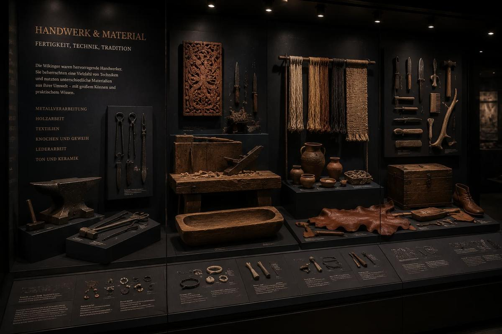
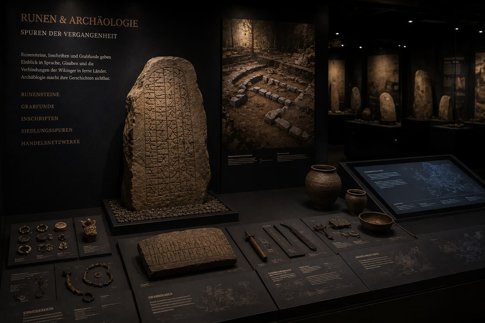
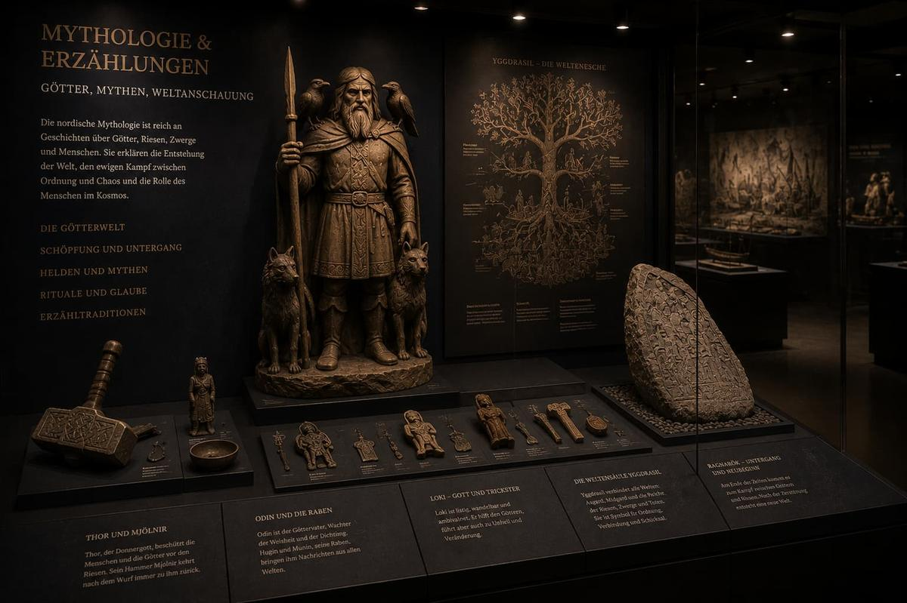

Handel & Austausch
Silber, Gewichte und Bernstein zeigen Handelswege zwischen Skandinavien, Mitteleuropa und fernen Märkten.
Wikinger Museum Saarbrücken
Entdecke die Wikinger Ausstellung in Saarbrücken mit Langschiffen, Handelsrouten, Runen und nordischer Mythologie. Ideal für Familien, Schulklassen und Geschichtsinteressierte.

Warum Wikinger?
Wikinger verbanden Skandinavien mit Flüssen, Küsten und Handelsplätzen in Europa. Silber, Bernstein, Runensteine und Schiffe zeigen, wie eng Handel, Seefahrt und Alltag miteinander verflochten waren.
Dauerausstellung
Langschiffe, Flusswege und Küstenrouten stehen im Mittelpunkt der Dauerausstellung „Wege über Wasser“. Sie zeigt, wie Mobilität, Handel und Begegnungen die Wikingerzeit prägten.
Themen der Ausstellung
Silbermünzen, Langhaus, Werkzeuge, Runensteine sowie Odin, Thor, Loki, Freyja und Tyr öffnen fünf klare Zugänge zur Wikinger Geschichte.

Silber, Gewichte und Bernstein zeigen Handelswege zwischen Skandinavien, Mitteleuropa und fernen Märkten.

Feuerstelle, Webstuhl und Vorräte machen Alltag, Arbeit und Gemeinschaft im Langhaus sichtbar.

Werkzeuge, Holz, Textilien und Metall zeigen die Präzision wikingerzeitlicher Handwerkskunst.

Runensteine, Inschriften und Grabfunde geben Hinweise auf Namen, Reisen und Erinnerung.

Odin, Thor, Loki, Freyja und Tyr stehen im Zentrum nordischer Mythologie und überlieferter Erzählungen.
Digitaler Wikingerpass
Der digitale Wikingerpass ergänzt den Rundgang mit Aufgaben, Quizfragen und kleinen Entdeckungen.
Virtueller Wikingerpass
0 Punkte · nächster Titel: Händler bei 160 Punkten
Punkte und Abzeichen bleiben lokal im Browser gespeichert und machen Fortschritte direkt sichtbar.
Besuch planen
Di–So 10:00–18:00 Uhr
Erwachsene 12 €, ermäßigt 8 €, Familienkarte 28 €
Zentral in Saarbrücken
infosaarvik@gmx.de
Studienprojekt
Diese Website entstand im Rahmen des Studiengangs Digital Media Marketing der Hochschule Kaiserslautern.
Studiengang kennenlernen